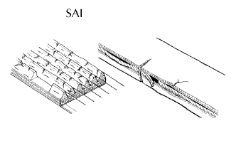
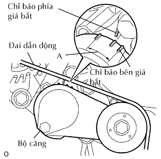
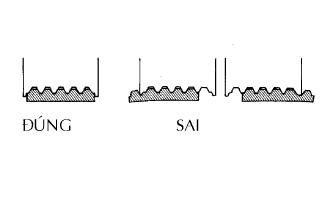

ĐAI DẪN ĐỘNG > KIỂM TRA TRÊN XE |
| 1. KIỂM TRA ĐAI DẪN ĐỘNG |
|  |
Kiểm tra cách quan sát bằng mắt thường xem dây đai dẫn động có bị quá mòn hoay sơn lõi không?
Nếu tìm thấy hư hỏng, hãy thay đai dẫn động.
|  |
Kiểm tra rằng dấu chỉ báo của bộ căng nằm trong vùng A như trên hình vẽ.
Nếu dấu không nằm trong vùng A, hãy thay thế đai dẫn động.
|  |
Sau khi lắp dây đai dẫn động, hãy kiểm tra rằng nó khít với các rãnh của đai. Kiểm tra bằng tay để xác nhận rằng dây đai không bị trượt ra khỏi rãnh ở đáy của puli trục khuỷu.